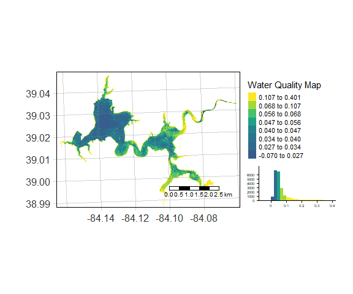

The main purpose of waterquality is to quickly and easily convert satellite-based reflectance imagery into one or many well-known water quality indices designed for the detection of Harmful Algal Blooms (HABs) using the following pigment proxies: chlorophyll-a, blue-green algae (phycocyanin), and turbidity. Currently, this package is able to process 40 algorithms for the following satellite-based imagers: WorldView-2, Sentinel-2, Landsat-8, MODIS, MERIS, and OLCI. In order to improve the aesthetics of the wq_calc() output, a series of Map_WQ() functions were developed to help reduce technical barriers and simplify the complexities in selecting a map layout. Additional functionality of the package includes a series of extract_lm() functions that wrap the “Fitting Linear Models” and “caret” packages to quickly generate crossvalidated linear models and standardized outputs (r2, p-value, slope, intercept of the global lm model & average r2, average RMSE, average MAE of crossvalidated model) for any number of algorithm and water quality parameter combinations. It is important to note that the extract_lm() functions require ground-truth data in order to develop the models. For a more detailed look into the full functionality of waterquality, please view “Introduction to the waterquality package”. For a broader look into how to apply this tool into a research workflow or for more information on topics such as data acquisition, image pre-processing, or results, see our publication entitled “Waterquality: An Open-Source R Package for the Detection and Quantification of Cyanobacterial Harmful Algal Blooms and Water Quality”.
Additionally, we have recently developed and published a complementary python-based version of waterquality compatible with ESRI ArcGIS and ArcPro. For more information please visit “waterquality for ArcGIS Pro Toolbox”
Installation
You can install the released version from CRAN with:
install.packages("waterquality")You can install waterquality from github with:
# install.packages("devtools")
devtools::install_github("RAJohansen/waterquality")Basic Example
The main function in this package is wq_calc():
library(waterquality)
library(terra)
s2 = terra::rast(system.file("raster/S2_Harsha.tif", package = "waterquality"))
MM12NDCI = wq_calc(s2, alg = "MM12NDCI", sat = "sentinel2")
samples = terra::vect(system.file("raster/Harsha_Simple_Points_CRS.gpkg", package = "waterquality"))
Map_WQ_raster(WQ_raster = MM12NDCI,
sample_points = samples,
map_title= "Water Quality Map",
raster_style = "quantile",
histogram = TRUE)
Package Contributions
We encourage users to submit issues and enhancement requests so we may continue to improve our package.
Furthermore, if you have a water quality algorithm that was not on our list, and you would like for it to be included in our package please email Richard.A.Johansen@erdc.dren.mil.